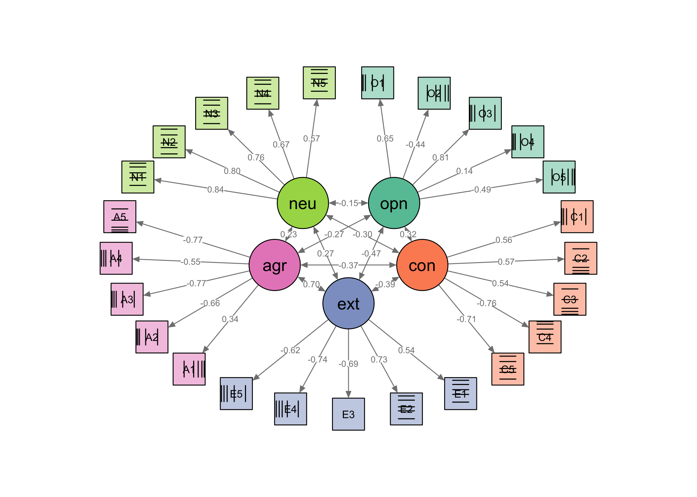

The lavaan.pl package allows the estimation of confirmatory factor models for ordinal data using stochastic and numeric pairwise likelihood optimisation.
Installation
You can install the development version of lavaan.pl from GitHub with:
# install.packages("devtools")
devtools::install_github("giuseppealfonzetti/lavaan.pl")When the package is installed, you can load it with:
library(lavaan.pl)
#> ℹ Loading required package: lavaan
#> This is lavaan 0.6-19
#> lavaan is FREE software! Please report any bugs.
#>
#> ── Conflicts ──────────────────────────────────────────────── lavaan.pl 0.1.0.9002 ──
#> ✖ lavaan.pl::cfa() masks lavaan::cfa()The startup message indicates that the lavaan.pl package provides its own version of the cfa() function, which can be used to estimate lavaan.pl models using the lavaan syntax. An example is given below.
Fitting an ordinal CFA model
Consider the data containing 25 personality items measured on 6-point scale from the International Personality Item Pool (IPIP) dataset. The data set is available in the lavaan.pl package and can be loaded with the following code:
data("bfi")
head(bfi)
#> # A tibble: 6 × 28
#> A1 A2 A3 A4 A5 C1 C2 C3 C4 C5 E1 E2 E3
#> <ord> <ord> <ord> <ord> <ord> <ord> <ord> <ord> <ord> <ord> <ord> <ord> <ord>
#> 1 6 6 5 6 5 6 6 6 1 3 2 1 6
#> 2 4 3 1 5 1 3 2 4 2 4 3 6 4
#> 3 4 4 5 6 5 4 3 5 3 2 1 3 2
#> 4 4 5 2 2 1 5 5 5 2 2 3 4 3
#> 5 1 5 6 5 6 4 3 2 4 5 2 1 2
#> 6 2 6 5 6 5 3 5 6 3 6 2 2 4
#> # ℹ 15 more variables: E4 <ord>, E5 <ord>, N1 <ord>, N2 <ord>, N3 <ord>,
#> # N4 <ord>, N5 <ord>, O1 <ord>, O2 <ord>, O3 <ord>, O4 <ord>, O5 <ord>,
#> # gender <int>, education <int>, age <int>The lavaan model syntax to fit a confirmatory factor analysis model with 5 latent factors, where the first 5 items load on the first factor and so on, is:
mod <- "
opn =~ O1 + O2 + O3 + O4 + O5 # Openness
con =~ C1 + C2 + C3 + C4 + C5 # Conscientiousness
ext =~ E1 + E2 + E3 + E4 + E5 # Extraversion
agr =~ A1 + A2 + A3 + A4 + A5 # Agreeableness
neu =~ N1 + N2 + N3 + N4 + N5 # Neuroticism
"Users of lavaan will be familiar with this syntax. The call to the cfa() function is made as usual:
# Fit the model (note, this cfa() function is from the lavaan.pl package)
fit <- cfa(model = mod, data = bfi, std.lv = TRUE, test = "mean.var.adjusted")
summary(fit)
#> lavaan.pl 0.1.0.9002
#> ⨉
#> lavaan 0.6-19 ended normally after 98 iterations
#>
#> Estimator PML
#> Optimization method UCMINF
#> Number of model parameters 160
#>
#> Number of observations 2236
#>
#> Model Test User Model:
#> Standard Scaled
#> Test Statistic 4584.031 7205.822
#> Degrees of freedom 265 333.065
#> P-value (Unknown) NA 0.000
#> Scaling correction factor 0.636
#> mean+var adjusted correction (PML)
#>
#> Parameter Estimates:
#>
#> Parameterization Delta
#> Standard errors Sandwich
#> Information bread Observed
#> Observed information based on Hessian
#>
#> Latent Variables:
#> Estimate Std.Err z-value P(>|z|)
#> opn =~
#> O1 0.647 0.059 10.909 0.000
#> O2 -0.444 0.093 -4.757 0.000
#> O3 0.808 0.056 14.370 0.000
#> O4 0.136 0.056 2.409 0.016
#> O5 -0.486 0.055 -8.781 0.000
#> con =~
#> C1 0.564 0.077 7.302 0.000
#> C2 0.571 0.069 8.317 0.000
#> C3 0.543 0.075 7.267 0.000
#> C4 -0.760 0.072 -10.522 0.000
#> C5 -0.706 0.073 -9.611 0.000
#> ext =~
#> E1 0.540 0.075 7.242 0.000
#> E2 0.727 0.071 10.213 0.000
#> E3 -0.690 0.068 -10.223 0.000
#> E4 -0.742 0.071 -10.511 0.000
#> E5 -0.620 0.095 -6.535 0.000
#> agr =~
#> A1 0.335 0.072 4.662 0.000
#> A2 -0.663 0.090 -7.368 0.000
#> A3 -0.771 0.094 -8.183 0.000
#> A4 -0.545 0.076 -7.217 0.000
#> A5 -0.774 0.093 -8.336 0.000
#> neu =~
#> N1 0.837 0.063 13.230 0.000
#> N2 0.801 0.063 12.808 0.000
#> N3 0.755 0.059 12.914 0.000
#> N4 0.666 0.067 10.009 0.000
#> N5 0.570 0.070 8.122 0.000
#>
#> Covariances:
#> Estimate Std.Err z-value P(>|z|)
#> opn ~~
#> con 0.322 0.083 3.871 0.000
#> ext -0.466 0.054 -8.631 0.000
#> agr -0.269 0.060 -4.487 0.000
#> neu -0.146 0.120 -1.218 0.223
#> con ~~
#> ext -0.390 0.091 -4.283 0.000
#> agr -0.370 0.098 -3.781 0.000
#> neu -0.301 0.085 -3.532 0.000
#> ext ~~
#> agr 0.702 0.083 8.468 0.000
#> neu 0.267 0.066 4.030 0.000
#> agr ~~
#> neu 0.232 0.044 5.303 0.000
#>
#> Thresholds:
#> Estimate Std.Err z-value P(>|z|)
#> O1|t1 -2.447 0.126 -19.379 0.000
#> O1|t2 -1.695 0.255 -6.642 0.000
#> O1|t3 -1.190 0.390 -3.055 0.002
#> O1|t4 -0.430 0.481 -0.894 0.371
#> O1|t5 0.455 0.408 1.116 0.265
#> O2|t1 -0.565 0.344 -1.642 0.101
#> O2|t2 0.131 0.158 0.828 0.408
#> O2|t3 0.495 0.198 2.494 0.013
#> O2|t4 1.011 0.270 3.748 0.000
#> O2|t5 1.557 0.274 5.676 0.000
#> O3|t1 -1.990 0.210 -9.454 0.000
#> O3|t2 -1.451 0.195 -7.447 0.000
#> O3|t3 -0.956 0.161 -5.936 0.000
#> O3|t4 -0.122 0.143 -0.852 0.394
#> O3|t5 0.839 0.228 3.678 0.000
#> O4|t1 -2.187 0.175 -12.521 0.000
#> O4|t2 -1.567 0.302 -5.183 0.000
#> O4|t3 -1.246 0.264 -4.717 0.000
#> O4|t4 -0.607 0.264 -2.296 0.022
#> O4|t5 0.255 0.353 0.722 0.470
#> O5|t1 -0.584 0.277 -2.108 0.035
#> O5|t2 0.261 0.166 1.576 0.115
#> O5|t3 0.771 0.153 5.039 0.000
#> O5|t4 1.341 0.273 4.919 0.000
#> O5|t5 1.931 0.221 8.758 0.000
#> C1|t1 -2.011 0.227 -8.853 0.000
#> C1|t2 -1.432 0.243 -5.897 0.000
#> C1|t3 -0.960 0.165 -5.815 0.000
#> C1|t4 -0.269 0.174 -1.545 0.122
#> C1|t5 0.736 0.293 2.513 0.012
#> C2|t1 -1.880 0.221 -8.490 0.000
#> C2|t2 -1.203 0.307 -3.921 0.000
#> C2|t3 -0.785 0.208 -3.776 0.000
#> C2|t4 -0.146 0.318 -0.459 0.646
#> C2|t5 0.828 0.351 2.358 0.018
#> C3|t1 -1.887 0.221 -8.540 0.000
#> C3|t2 -1.191 0.234 -5.081 0.000
#> C3|t3 -0.778 0.183 -4.249 0.000
#> C3|t4 -0.022 0.246 -0.091 0.927
#> C3|t5 0.921 0.286 3.219 0.001
#> C4|t1 -0.550 0.283 -1.948 0.051
#> C4|t2 0.208 0.183 1.141 0.254
#> C4|t3 0.664 0.153 4.345 0.000
#> C4|t4 1.289 0.300 4.301 0.000
#> C4|t5 2.033 0.188 10.818 0.000
#> C5|t1 -0.886 0.177 -4.999 0.000
#> C5|t2 -0.254 0.116 -2.185 0.029
#> C5|t3 0.047 0.121 0.393 0.695
#> C5|t4 0.630 0.127 4.949 0.000
#> C5|t5 1.303 0.188 6.929 0.000
#> E1|t1 -0.728 0.363 -2.004 0.045
#> E1|t2 -0.063 0.157 -0.401 0.689
#> E1|t3 0.311 0.228 1.367 0.172
#> E1|t4 0.789 0.237 3.329 0.001
#> E1|t5 1.373 0.307 4.470 0.000
#> E2|t1 -0.867 0.339 -2.557 0.011
#> E2|t2 -0.153 0.251 -0.609 0.543
#> E2|t3 0.169 0.239 0.704 0.481
#> E2|t4 0.754 0.376 2.003 0.045
#> E2|t5 1.320 0.277 4.758 0.000
#> E3|t1 -1.625 0.174 -9.340 0.000
#> E3|t2 -1.010 0.186 -5.445 0.000
#> E3|t3 -0.518 0.114 -4.535 0.000
#> E3|t4 0.267 0.218 1.224 0.221
#> E3|t5 1.148 0.148 7.737 0.000
#> E4|t1 -1.628 0.248 -6.553 0.000
#> E4|t2 -1.061 0.367 -2.890 0.004
#> E4|t3 -0.716 0.157 -4.566 0.000
#> E4|t4 -0.263 0.412 -0.638 0.523
#> E4|t5 0.640 0.251 2.549 0.011
#> E5|t1 -1.813 0.229 -7.919 0.000
#> E5|t2 -1.199 0.206 -5.822 0.000
#> E5|t3 -0.798 0.176 -4.537 0.000
#> E5|t4 -0.168 0.135 -1.241 0.215
#> E5|t5 0.790 0.284 2.778 0.005
#> A1|t1 -0.403 0.107 -3.780 0.000
#> A1|t2 0.363 0.133 2.737 0.006
#> A1|t3 0.780 0.134 5.800 0.000
#> A1|t4 1.270 0.104 12.172 0.000
#> A1|t5 1.888 0.190 9.963 0.000
#> A2|t1 -2.156 0.185 -11.659 0.000
#> A2|t2 -1.558 0.311 -5.017 0.000
#> A2|t3 -1.223 0.392 -3.116 0.002
#> A2|t4 -0.513 0.368 -1.393 0.164
#> A2|t5 0.456 0.311 1.463 0.144
#> A3|t1 -1.849 0.212 -8.718 0.000
#> A3|t2 -1.332 0.124 -10.757 0.000
#> A3|t3 -0.995 0.138 -7.187 0.000
#> A3|t4 -0.350 0.128 -2.733 0.006
#> A3|t5 0.593 0.119 4.967 0.000
#> A4|t1 -1.716 0.266 -6.442 0.000
#> A4|t2 -1.206 0.253 -4.769 0.000
#> A4|t3 -0.927 0.199 -4.671 0.000
#> A4|t4 -0.423 0.188 -2.247 0.025
#> A4|t5 0.202 0.310 0.651 0.515
#> A5|t1 -2.015 0.174 -11.584 0.000
#> A5|t2 -1.364 0.346 -3.942 0.000
#> A5|t3 -0.946 0.256 -3.701 0.000
#> A5|t4 -0.277 0.322 -0.861 0.389
#> A5|t5 0.652 0.369 1.766 0.077
#> N1|t1 -0.711 0.177 -4.009 0.000
#> N1|t2 -0.060 0.141 -0.428 0.669
#> N1|t3 0.335 0.141 2.377 0.017
#> N1|t4 0.892 0.158 5.647 0.000
#> N1|t5 1.489 0.201 7.427 0.000
#> N2|t1 -1.163 0.141 -8.225 0.000
#> N2|t2 -0.473 0.106 -4.452 0.000
#> N2|t3 -0.094 0.101 -0.934 0.350
#> N2|t4 0.570 0.114 5.003 0.000
#> N2|t5 1.259 0.171 7.382 0.000
#> N3|t1 -0.924 0.199 -4.631 0.000
#> N3|t2 -0.210 0.133 -1.580 0.114
#> N3|t3 0.106 0.138 0.764 0.445
#> N3|t4 0.685 0.137 5.003 0.000
#> N3|t5 1.351 0.226 5.969 0.000
#> N4|t1 -0.961 0.266 -3.606 0.000
#> N4|t2 -0.235 0.138 -1.699 0.089
#> N4|t3 0.155 0.196 0.791 0.429
#> N4|t4 0.768 0.169 4.539 0.000
#> N4|t5 1.341 0.221 6.082 0.000
#> N5|t1 -0.714 0.206 -3.467 0.001
#> N5|t2 -0.035 0.153 -0.231 0.817
#> N5|t3 0.297 0.134 2.218 0.027
#> N5|t4 0.825 0.125 6.605 0.000
#> N5|t5 1.358 0.240 5.653 0.000
#>
#> Variances:
#> Estimate Std.Err z-value P(>|z|)
#> .O1 0.581
#> .O2 0.803
#> .O3 0.347
#> .O4 0.982
#> .O5 0.764
#> .C1 0.681
#> .C2 0.674
#> .C3 0.705
#> .C4 0.422
#> .C5 0.502
#> .E1 0.708
#> .E2 0.471
#> .E3 0.524
#> .E4 0.450
#> .E5 0.615
#> .A1 0.888
#> .A2 0.561
#> .A3 0.406
#> .A4 0.703
#> .A5 0.401
#> .N1 0.300
#> .N2 0.359
#> .N3 0.429
#> .N4 0.556
#> .N5 0.675
#> opn 1.000
#> con 1.000
#> ext 1.000
#> agr 1.000
#> neu 1.000All1 lavaan methods should carry over, such as:
head(coef(fit), 10)
#> opn=~O1 opn=~O2 opn=~O3 opn=~O4 opn=~O5 con=~C1 con=~C2
#> 0.6474239 -0.4443222 0.8077954 0.1355670 -0.4862491 0.5644095 0.5707375
#> con=~C3 con=~C4 con=~C5
#> 0.5430038 -0.7602739 -0.7055655
head(parameterestimates(fit, se = TRUE))
#> lhs op rhs est se z pvalue ci.lower ci.upper
#> 1 opn =~ O1 0.647 0.059 10.909 0.000 0.531 0.764
#> 2 opn =~ O2 -0.444 0.093 -4.757 0.000 -0.627 -0.261
#> 3 opn =~ O3 0.808 0.056 14.370 0.000 0.698 0.918
#> 4 opn =~ O4 0.136 0.056 2.409 0.016 0.025 0.246
#> 5 opn =~ O5 -0.486 0.055 -8.781 0.000 -0.595 -0.378
#> 6 con =~ C1 0.564 0.077 7.302 0.000 0.413 0.716
head(fitted(fit)$cov) # model-implied covariance matrix for the UVs
#> O1 O2 O3 O4 O5 C1
#> O1 1.00000000 -0.28766483 0.5229860 0.08776931 -0.31480927 0.11770363
#> O2 -0.28766483 1.00000000 -0.3589215 -0.06023543 0.21605128 -0.08077913
#> O3 0.52298603 -0.35892145 1.0000000 0.10951038 -0.39278976 0.14685965
#> O4 0.08776931 -0.06023543 0.1095104 1.00000000 -0.06591932 0.02464649
#> O5 -0.31480927 0.21605128 -0.3927898 -0.06591932 1.00000000 -0.08840156
#> C1 0.11770363 -0.08077913 0.1468597 0.02464649 -0.08840156 1.00000000
#> C2 C3 C4 C5 E1 E2
#> O1 0.11902330 0.11323963 -0.15854979 -0.14714072 -0.16296125 -0.21935390
#> O2 -0.08168481 -0.07771552 0.10881155 0.10098159 0.11183910 0.15054096
#> O3 0.14850622 0.14128989 -0.19782369 -0.18358852 -0.20332791 -0.27368941
#> O4 0.02492282 0.02371175 -0.03319945 -0.03081045 -0.03412319 -0.04593149
#> O5 -0.08939270 -0.08504886 0.11907915 0.11051035 0.12239239 0.16474621
#> C1 0.32212966 0.30647649 -0.42910580 -0.39822782 -0.11896000 -0.16012604
#> E3 E4 E5 A1 A2 A3
#> O1 0.20823012 0.22383136 0.18712824 -0.05848422 0.11559794 0.13439674
#> O2 -0.14290679 -0.15361381 -0.12842473 0.04013729 -0.07933401 -0.09223549
#> O3 0.25981019 0.27927598 0.23348123 -0.07297118 0.14423237 0.16768776
#> O4 0.04360224 0.04686905 0.03918362 -0.01224627 0.02420557 0.02814193
#> O5 -0.15639167 -0.16810902 -0.14054306 0.04392470 -0.08682008 -0.10093895
#> C1 0.15200580 0.16339454 0.13660165 -0.06997621 0.13831261 0.16080532
#> A4 A5 N1 N2 N3 N4
#> O1 0.09506875 0.13494469 -0.07927439 -0.07588719 -0.07159271 -0.06315260
#> O2 -0.06524498 -0.09261154 0.05440543 0.05208082 0.04913355 0.04334116
#> O3 0.11861795 0.16837144 -0.09891122 -0.09468498 -0.08932674 -0.07879594
#> O4 0.01990687 0.02825667 -0.01659962 -0.01589036 -0.01499112 -0.01322380
#> O5 -0.07140158 -0.10135049 0.05953920 0.05699523 0.05376986 0.04743089
#> C1 0.11374949 0.16146094 -0.14224875 -0.13617081 -0.12846487 -0.11332005
#> N5
#> O1 -0.05398303
#> O2 0.03704816
#> O3 -0.06735501
#> O4 -0.01130375
#> O5 0.04054407
#> C1 -0.09686632And also plot from the semPlot package:
library(semPlot)
grouplist <- list(
lat = c("opn", "con", "ext", "agr", "neu"),
man = rep(c("opn", "con", "ext", "agr", "neu"), each = 5)
)
# Define a named vector of colors for each group (latent factor)
groupcols <- RColorBrewer::brewer.pal(5, "Set2") |>
rep(each = 5) |>
adjustcolor(alpha.f = 0.5)
# Now call semPaths
semPaths(fit, whatLabels = "est", layout = "circle", residuals = FALSE,
intercept = FALSE, groups = grouplist, color = groupcols,
legend = FALSE)
Session information
sessioninfo::session_info()
#> ─ Session info ───────────────────────────────────────────────────────────────
#> setting value
#> version R version 4.4.1 (2024-06-14)
#> os macOS 15.3
#> system aarch64, darwin20
#> ui X11
#> language (EN)
#> collate en_US.UTF-8
#> ctype en_US.UTF-8
#> tz Asia/Brunei
#> date 2025-02-08
#> pandoc 3.2 @ /Applications/RStudio.app/Contents/Resources/app/quarto/bin/tools/aarch64/ (via rmarkdown)
#>
#> ─ Packages ───────────────────────────────────────────────────────────────────
#> package * version date (UTC) lib source
#> abind 1.4-8 2024-09-12 [1] CRAN (R 4.4.1)
#> arm 1.14-4 2024-04-01 [1] CRAN (R 4.4.0)
#> backports 1.5.0 2024-05-23 [1] CRAN (R 4.4.0)
#> base64enc 0.1-3 2015-07-28 [1] CRAN (R 4.4.0)
#> boot 1.3-31 2024-08-28 [1] CRAN (R 4.4.1)
#> carData 3.0-5 2022-01-06 [1] CRAN (R 4.4.0)
#> checkmate 2.3.2 2024-07-29 [1] CRAN (R 4.4.0)
#> cli 3.6.3 2024-06-21 [1] CRAN (R 4.4.0)
#> cluster 2.1.8 2024-12-11 [1] CRAN (R 4.4.1)
#> coda 0.19-4.1 2024-01-31 [1] CRAN (R 4.4.0)
#> colorspace 2.1-1 2024-07-26 [1] CRAN (R 4.4.0)
#> corpcor 1.6.10 2021-09-16 [1] CRAN (R 4.4.0)
#> data.table 1.16.4 2024-12-06 [1] CRAN (R 4.4.1)
#> digest 0.6.37 2024-08-19 [1] CRAN (R 4.4.1)
#> dplyr 1.1.4 2023-11-17 [1] CRAN (R 4.4.0)
#> evaluate 1.0.3 2025-01-10 [1] CRAN (R 4.4.1)
#> fastmap 1.2.0 2024-05-15 [1] CRAN (R 4.4.0)
#> fdrtool 1.2.18 2024-08-20 [1] CRAN (R 4.4.1)
#> foreign 0.8-87 2024-06-26 [1] CRAN (R 4.4.0)
#> Formula 1.2-5 2023-02-24 [1] CRAN (R 4.4.0)
#> generics 0.1.3 2022-07-05 [1] CRAN (R 4.4.0)
#> ggplot2 3.5.1 2024-04-23 [1] CRAN (R 4.4.0)
#> glasso 1.11 2019-10-01 [1] CRAN (R 4.4.0)
#> glue 1.8.0 2024-09-30 [1] CRAN (R 4.4.1)
#> gridExtra 2.3 2017-09-09 [1] CRAN (R 4.4.0)
#> gtable 0.3.6 2024-10-25 [1] CRAN (R 4.4.1)
#> gtools 3.9.5 2023-11-20 [1] CRAN (R 4.4.0)
#> Hmisc 5.2-1 2024-12-02 [1] CRAN (R 4.4.1)
#> htmlTable 2.4.3 2024-07-21 [1] CRAN (R 4.4.0)
#> htmltools 0.5.8.1 2024-04-04 [1] CRAN (R 4.4.0)
#> htmlwidgets 1.6.4 2023-12-06 [1] CRAN (R 4.4.0)
#> igraph 2.1.2 2024-12-07 [1] CRAN (R 4.4.1)
#> jpeg 0.1-10 2022-11-29 [1] CRAN (R 4.4.0)
#> knitr 1.49 2024-11-08 [1] CRAN (R 4.4.1)
#> kutils 1.73 2023-09-17 [1] CRAN (R 4.4.0)
#> lattice 0.22-6 2024-03-20 [1] CRAN (R 4.4.1)
#> lavaan * 0.6-19 2024-09-26 [1] CRAN (R 4.4.1)
#> lifecycle 1.0.4 2023-11-07 [1] CRAN (R 4.4.0)
#> lisrelToR 0.3 2024-02-07 [1] CRAN (R 4.4.0)
#> lme4 1.1-35.5 2024-07-03 [1] CRAN (R 4.4.0)
#> magrittr 2.0.3 2022-03-30 [1] CRAN (R 4.4.0)
#> MASS 7.3-61 2024-06-13 [1] CRAN (R 4.4.0)
#> Matrix 1.7-1 2024-10-18 [1] CRAN (R 4.4.1)
#> mi 1.1 2022-06-06 [1] CRAN (R 4.4.0)
#> minqa 1.2.8 2024-08-17 [1] CRAN (R 4.4.0)
#> mnormt 2.1.1 2022-09-26 [1] CRAN (R 4.4.0)
#> munsell 0.5.1 2024-04-01 [1] CRAN (R 4.4.0)
#> nlme 3.1-166 2024-08-14 [1] CRAN (R 4.4.0)
#> nloptr 2.1.1 2024-06-25 [1] CRAN (R 4.4.0)
#> nnet 7.3-19 2023-05-03 [1] CRAN (R 4.4.1)
#> numDeriv 2016.8-1.1 2019-06-06 [1] CRAN (R 4.4.0)
#> OpenMx 2.21.13 2024-10-19 [1] CRAN (R 4.4.1)
#> openxlsx 4.2.7.1 2024-09-20 [1] CRAN (R 4.4.1)
#> pbapply 1.7-2 2023-06-27 [1] CRAN (R 4.4.0)
#> pbivnorm 0.6.0 2015-01-23 [1] CRAN (R 4.4.0)
#> pillar 1.10.1 2025-01-07 [1] CRAN (R 4.4.1)
#> pkgconfig 2.0.3 2019-09-22 [1] CRAN (R 4.4.0)
#> lavaan.pl * 0.1.0.9002 2025-02-08 [1] local
#> plyr 1.8.9 2023-10-02 [1] CRAN (R 4.4.0)
#> png 0.1-8 2022-11-29 [1] CRAN (R 4.4.0)
#> psych 2.4.6.26 2024-06-27 [1] CRAN (R 4.4.0)
#> qgraph 1.9.8 2023-11-03 [1] CRAN (R 4.4.0)
#> quadprog 1.5-8 2019-11-20 [1] CRAN (R 4.4.0)
#> R6 2.5.1 2021-08-19 [1] CRAN (R 4.4.0)
#> RColorBrewer 1.1-3 2022-04-03 [1] CRAN (R 4.4.0)
#> Rcpp 1.0.14 2025-01-12 [1] CRAN (R 4.4.1)
#> RcppClock 1.1 2021-11-06 [1] CRAN (R 4.4.0)
#> RcppEigen 0.3.4.0.2 2024-08-24 [1] CRAN (R 4.4.1)
#> RcppParallel 5.1.10 2025-01-24 [1] CRAN (R 4.4.1)
#> reshape2 1.4.4 2020-04-09 [1] CRAN (R 4.4.0)
#> rlang 1.1.5 2025-01-17 [1] CRAN (R 4.4.1)
#> rmarkdown 2.29 2024-11-04 [1] CRAN (R 4.4.1)
#> rockchalk 1.8.157 2022-08-06 [1] CRAN (R 4.4.0)
#> rpart 4.1.23 2023-12-05 [1] CRAN (R 4.4.1)
#> rstudioapi 0.17.1 2024-10-22 [1] CRAN (R 4.4.1)
#> scales 1.3.0 2023-11-28 [1] CRAN (R 4.4.0)
#> sem 3.1-16 2024-08-28 [1] CRAN (R 4.4.1)
#> semPlot * 1.1.6 2022-08-10 [1] CRAN (R 4.4.0)
#> sessioninfo 1.2.2 2021-12-06 [1] CRAN (R 4.4.0)
#> stringi 1.8.4 2024-05-06 [1] CRAN (R 4.4.0)
#> stringr 1.5.1 2023-11-14 [1] CRAN (R 4.4.0)
#> tibble 3.2.1 2023-03-20 [1] CRAN (R 4.4.0)
#> tidyselect 1.2.1 2024-03-11 [1] CRAN (R 4.4.0)
#> ucminf 1.2.2 2025-01-23 [1] Github (hdakpo/ucminf@a3a411f)
#> utf8 1.2.4 2023-10-22 [1] CRAN (R 4.4.0)
#> vctrs 0.6.5 2023-12-01 [1] CRAN (R 4.4.0)
#> xfun 0.50 2025-01-07 [1] CRAN (R 4.4.1)
#> XML 3.99-0.17 2024-06-25 [1] CRAN (R 4.4.0)
#> xtable 1.8-4 2019-04-21 [1] CRAN (R 4.4.0)
#> yaml 2.3.10 2024-07-26 [1] CRAN (R 4.4.0)
#> zip 2.3.1 2024-01-27 [1] CRAN (R 4.4.0)
#>
#> [1] /Library/Frameworks/R.framework/Versions/4.4-arm64/Resources/library
#>
#> ──────────────────────────────────────────────────────────────────────────────